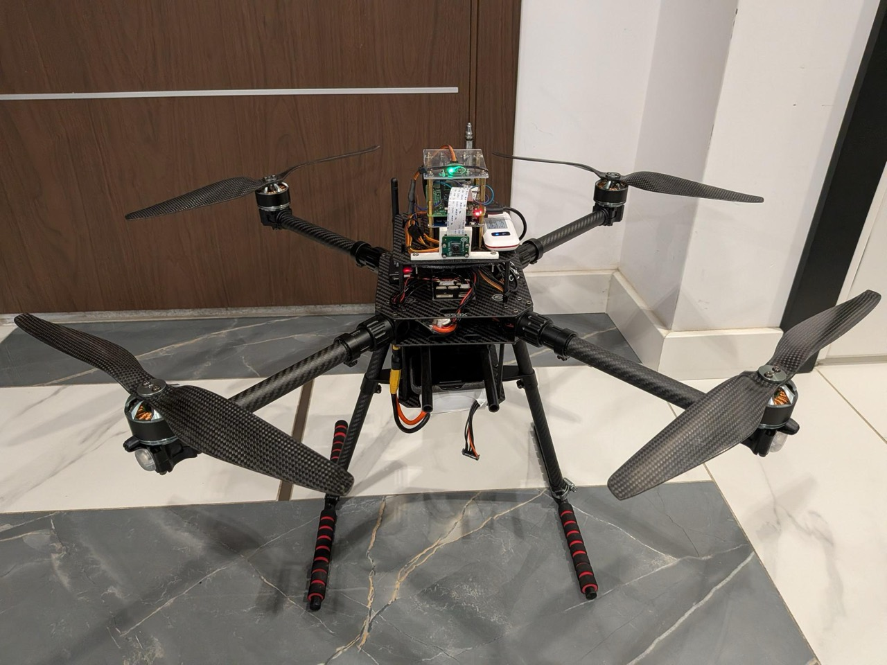
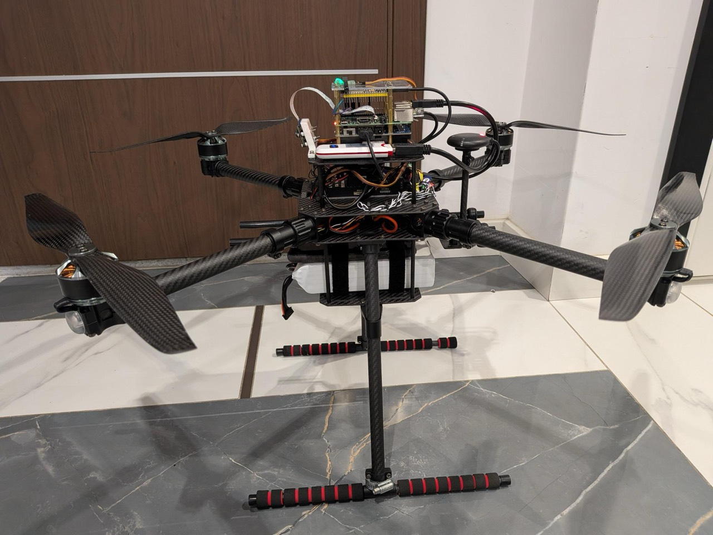
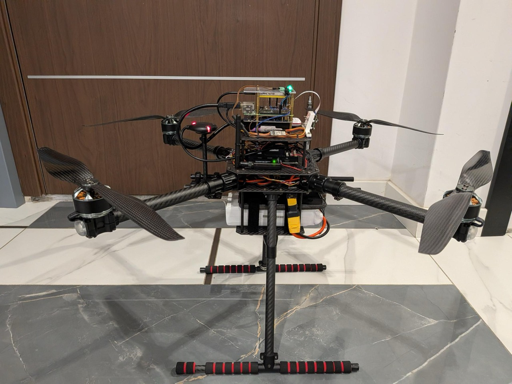
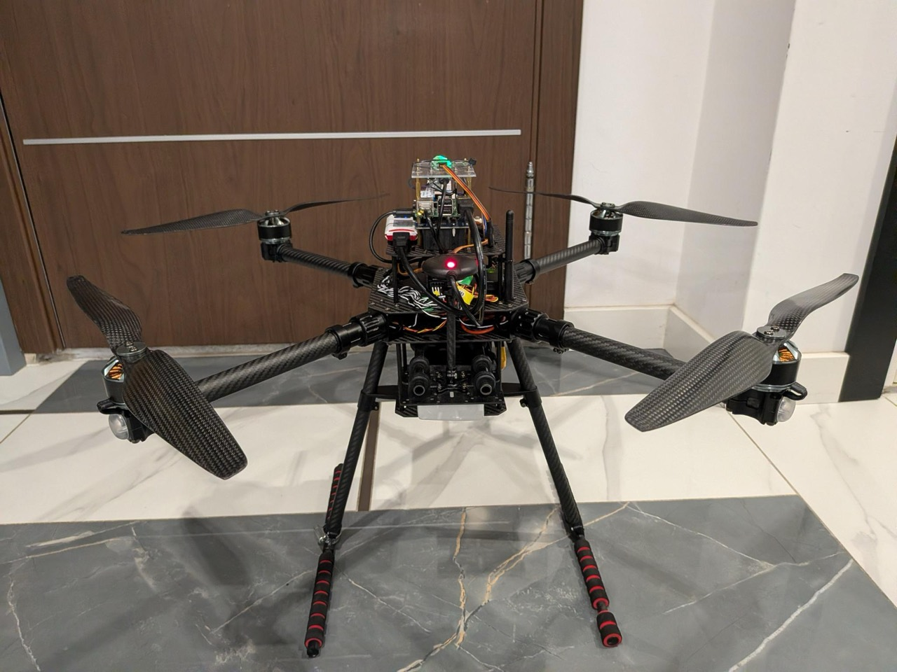
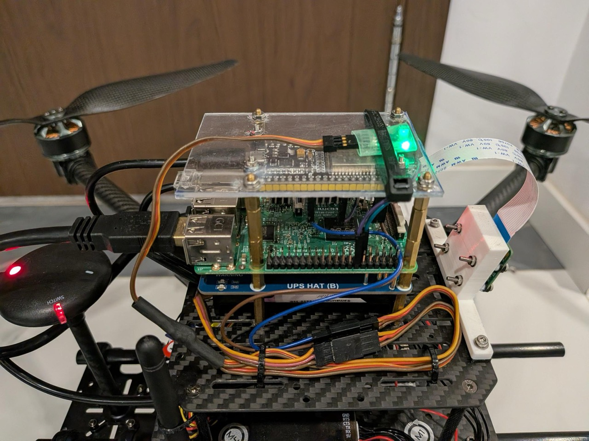
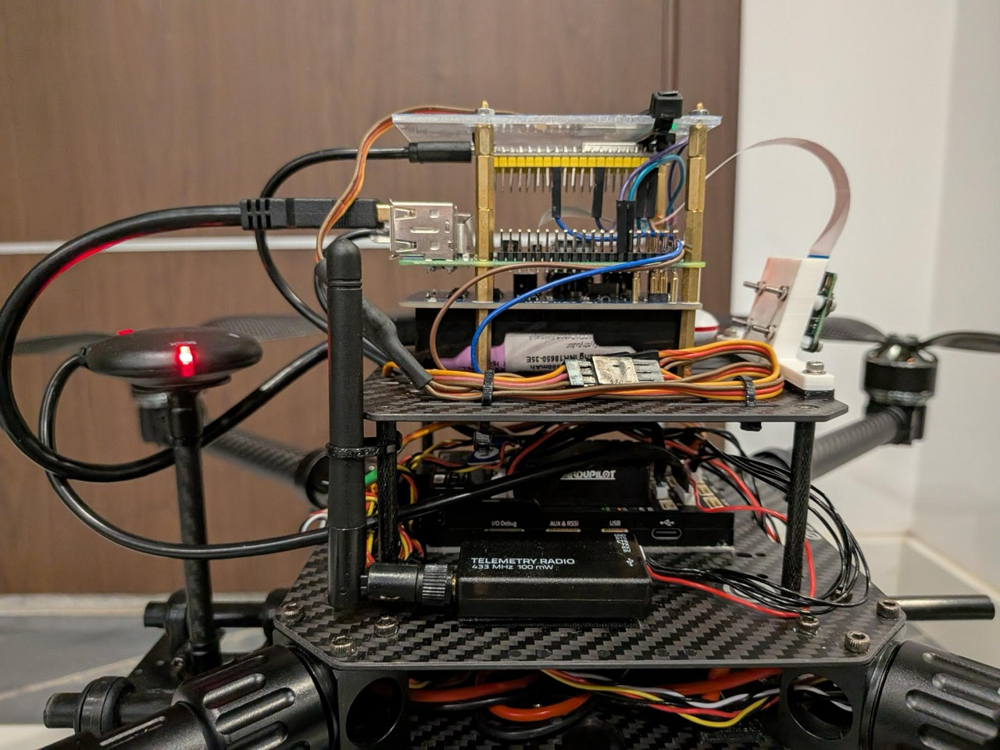
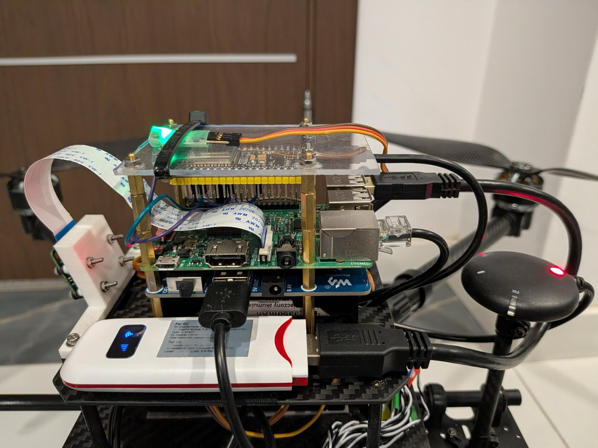
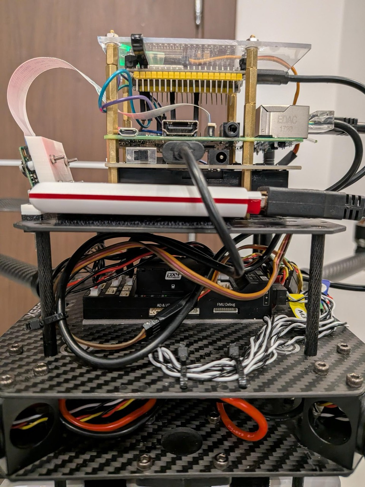

Open-source drone platform
Fly a drone from anywhere.
Today, Drone Grid is a cloud system for operating multirotor UAVs. Its ambitions are far greater than that — see the roadmap.
The pilot could have been 8,000 km away.
Follow your local laws and regulations. Read the documentation and, most importantly, the safety recommendations.
Features
Controls
Fly with the virtual joysticks, a keyboard, or any gamepad supported by the Gamepad API (a joystick from an old console works).
Telemetry HUD
Altitude, flight mode, link health, battery, GPS — all displayed in real time.
Low-latency live video stream
~250 ms glass-to-glass on average over mobile network.
Very dependent on the mobile network and on the distance between you, the drone, and the compute infrastructure.Share a flight
Hand anyone a link to watch your live video stream and telemetry — view-only, revocable, no account needed.
Self-registration
User and drone registration are entirely self-managed.
Any device with a browser
If it runs a modern browser, you can fly through it.
Tested hardware
The first Drone Grid drone








Ain't she a beauty?
- AirframeHolybro X650 development kit
- Flight ctrlPixhawk 6X running PX4
- CompanionRaspberry Pi with a camera module
- Link5G/4G USB modem (or an old phone as a Wi-Fi hotspot) with a data plan
Roadmap
Where this is headed
- Several successful manual flights through Drone Grid
- BVLOS flight enablement Drone laws vary by country and region. You are solely responsible for operating in compliance with all applicable aviation regulations.
- Link sharing service — share your live stream and telemetry with others
- Self-registration of users and drones
- Autonomous mission planning and execution (GIS, geofencing)
- Flight telemetry aggregation and visualization
- Onboard and offboard computer vision
- Tests with fixed-wing and VTOL UAVs
- Drone Grid flight via satellite internet
- Expanding hardware and software support — ArduPilot, more flight controllers and companion computers
- Simulation as a service — currently, simulation is supported only locally
- Continuous system refinement and optimization
- Natural language interface to the drone
- Beyond UAVs — other unmanned systems: rovers, boats, submarines
Let's build together.
Drone Grid is self-funded and open-source — created for the love of the game, and a lot of fun to work on. If flying drones through an open-source cloud system sounds like fun — let's connect.
Feedback, opportunities, and contributions are all welcome.